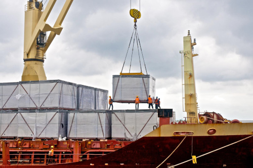

Importação, Exportação e Consultoria Logística
O Grupo
A Axis Trading é parte de um grupo com quase três
décadas de experiência acumulada, controlando
companhias em diversos setores, tais como energia,
infraestrutura, tecnologia da informação,
engenharia, arquitetura e imobiliária, com presença
no Brasil, América Latina, Europa e África.

Quem Somos
Com
mais de dez anos de atuação, a Axis Trading se
tornou um parceiro estratégico na gestão comercial
de empresas e projetos multinacionais que atuam
no comércio exterior Iniciamos nossa história na
África, mas atualmente realizamos soluções
completas de movimentações financeiras e de
mercadorias em todos os continentes, com forte
atuação na Ásia.
Áreas de Atuação
Entendemos que o mercado brasileiro é amplo e
ainda mais potencializado quando se considera
um horizonte internacional Para isto, a Axis
Trading coloca à disposição sua expertise e
capacidade técnica, integrando o cliente ao Supply
Chain mundial, inclusive ao serviços de Sourcing
Global Sourcing e Procurement.
Exportação
Auxiliamos no acesso a mercados estratégicos, na busca por
melhores soluções e alternativas a partir de estudos dedicados e
operações com a devida gestão de risco.
- Suporte jurídico, comercial, institucional e operacional.
- Transparência e segurança nos negócios firmados.
- Conhecimento e experiência no mercado internacional.
- Excelência nas operações.
Importação
A Axis Trading oferece todas as soluções em operações de importação nas
modalidades por encomenda e por conta e de ordem de terceiros.
- Levantamento completo das documentações requeridas.
- Tratamentos tributários, administrativos, licenciamentos e eventuais
barreiras técnicas existentes.
- Estimativas e forecasts customizados de importações.
- Melhores resultados em custo x prazo nas operações do cliente/projeto.
- Perfeito desencadeamento do manuseio, da logística e do desembaraço
aduaneiro da carga.

Logística
Gerenciar a movimentação de cargas é uma das nossas especialidades.
- Equipe técnica com profissionais experientes nas esferas necessárias
à correta movimentação e manuseio das cargas internacionais.
- Equipes internacionais podem ser deslocadas sob demanda, de
modo a assegurar o perfeito e adequado cuidado com a carga ou
com o projeto dos nossos clientes.

Distribuição
A distribuição é um processo igualmente crítico, que exige conhecimento de processos
em todas as etapas da circulação de cargas.
- Planejamento na gestão de cargas.
- Assessment das melhores estratégias de armazenagem, temporária ou
permanente.
- Distribuição programada de acordo com as especificidades do cliente (
indústria, projetos).
- Eficiência no processo, mitigando riscos de quebra produtiva/construtiva.
- Acompanhamento de todo o processo desde a aquisição na origem à entrega no
destino.
- Cliente final constantemente atualizado do posicionamento das cargas.
Gestão Tributária
A administração tributária é um diferencial da Axis Trading O detalhamento de custos a
serem feitos na importação, na exportação e na distribuição de cargas é uma prerrogativa
num contexto de cenário global.
- Profissionais competentes estão em constante busca para aferir a retidão nos
processos, principalmente para reduzir gastos desnecessários.
- Pesquisa do mercado a ser explorado.
- Diagnóstico completo no que se refere a barreiras tarifarias e alfandegarias, modal
mais adequado e parceiros comerciais confiáveis.
- Planejamento logístico, articulado com o financeiro para que cada produto esteja
dentro da classificação tarifaria adequada.
- Orientação na emissão de licenças específicas, para o cumprimento de todas as
exigências de recolhimento de taxas, tributos e demais obrigações junto às
autoridades.

Órgão Anuentes